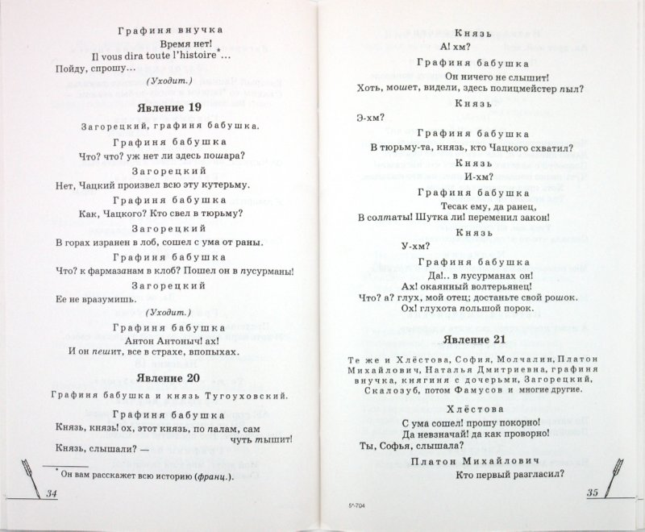

Не быть тебе в Москве, не жить тебе с людьми;
Подалее от этих хватов.
В деревню, к тетке, в глушь, в Саратов,
Там будешь горе горевать.
За пяльцами сидеть, за святцами зевать.

А вас, суда́рь, прошу я толком Туда не жаловать ни прямо, ни проселком; И ваша такова последняя черта, Что, чай, ко всякому дверь будет заперта: Я постараюсь, я, в набат я приударю, По городу всему наделаю хлопот, И оглашу во весь народ: В Сенат подам, министрам, государю.
"Горе от ума" - соетает в себе элементы романтизма и реализма